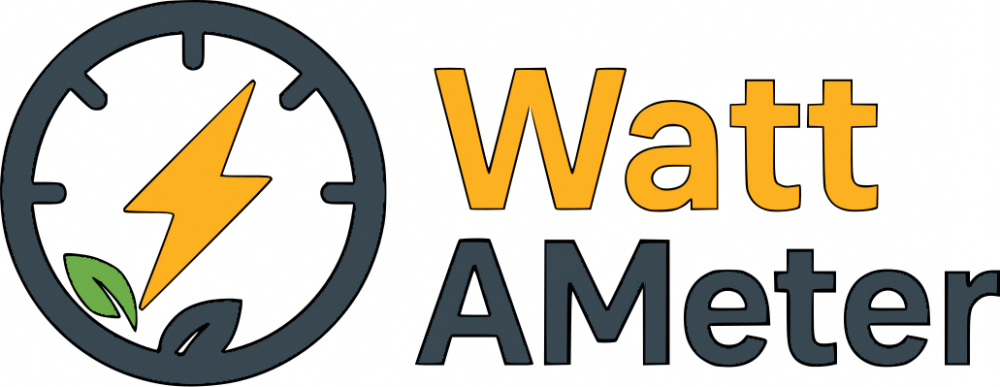

WattAMeter#

WattAMeter is a Python library developed for tracking and analyzing time series of power system data. It provides trackers for collecting power per node, per job, enabling users to analyze power consumption patterns and optimize energy usage in high-performance computing environments. It is designed to be easy to integrate into existing workflows, making it a valuable tool for researchers and engineers focused on energy efficiency in computing. There are multiple ways to use WattAMeter. Check out the complete documentation here.
WattAMeter as a module#
In the NLR HPC systems, WattAMeter is a module that can be loaded using module load wattameter. The module loads a few commands in your environment:
-
start_wattameter: Start a WattAMeter tracking session in a SLURM job. -
stop_wattameter: Stop the last started WattAMeter tracking session in a SLURM job. -
wattameter_benchmark_dt: Estimate the minimum sampling interval for each reader to be used in WattAMeter tracking sessions. The sampling interval is the time between two consecutive readings from a meter. -
wattameter_benchmark_overhead: Estimate the overhead of using WattAMeter in a tracking session. The overhead is split into two parts: the overhead of starting and stopping a tracking session, and the overhead of each reading from a meter.
While the benchmarking commands are self-explanatory, there are a few things to note about starting and stopping a WattAMeter tracking session:
-
The commands
start_wattameterandstop_wattameterare prepared to handle multiple tracking sessions in a single SLURM job. They are intended to be used in consecutive pairs, not nested. We do not see any advantage in starting multiple tracking sessions at the same time since they will collect the same data. -
The CPU metrics are collected for the whole compute node, not per core. Therefore, one should only trust the CPU power data when all the cores in a node are used by the job. In addition, we recommend using exclusive node allocation (
--exclusiveflag in SLURM) when analyzing CPU power data. -
The GPU metrics are collected per GPU device, so they can be trusted even when multiple jobs share the same node, as long as each job uses different GPU devices.
Example usage#
Here is an example of how to use WattAMeter in a SLURM job script:
#!/bin/bash
#SBATCH --account=<project handle>
#SBATCH --job-name=wattameter_example
#SBATCH --nodes=2
#SBATCH --ntasks-per-node=4
#SBATCH --gpus=8
#SBATCH --time=00:30:00
#SBATCH --exclusive
module load wattameter
start_wattameter --tracker 0.1,nvml-power,rapl --tracker 1.0,nvml-util --log-level error
srun my_application_executable
stop_wattameter
The output of a WattAMeter tracking session is a set of log files stored in the directory where the job was launched. Each file contains time series data collected by a specific reader. The output in the GPU reader log file using --tracker 0.1,nvml-power,nvml-temp looks like this:
# 2025-10-07_09:38:40.617145 - WattAMeter run 10989526
# timestamp reading-time[ns] gpu-0[mW] gpu-1[mW] gpu-2[mW] gpu-3[mW] gpu-0[C] gpu-1[C] gpu-2[C] gpu-3[C]
2025-10-07_09:38:40.623626 45560 75832 74362 75288 73544 41 41 41 41
2025-10-07_09:38:40.723913 37227 75871 74376 75248 73500 41 41 41 41
2025-10-07_09:38:40.824184 27162 75830 74338 75282 73431 41 41 41 41
2025-10-07_09:38:40.924477 35033 75787 74346 75261 73427 41 41 41 41
2025-10-07_09:38:41.024538 23897 75787 74364 75260 73494 41 41 41 41
2025-10-07_09:38:41.124634 28633 75759 74333 75282 73530 41 41 41 42
2025-10-07_09:38:41.224923 33521 75736 74343 75262 73515 41 41 41 41
2025-10-07_09:38:41.324985 28263 75699 74380 75298 73515 41 41 41 42
In this file,
-
The first line has the SLURM job ID
10989526and the start time of the tracking session. If multiple tracking sessions are started in the same job, the second tracking session will have run${SLURM_JOB_ID}-1, the third will have run${SLURM_JOB_ID}-2, and so on. -
The second line is the header line that describes each column in the file.
-
Each subsequent line contains a timestamp, the reading time in nanoseconds, the power readings from each GPU in milliwatts, and the temperature readings from each GPU in Celsius. Reading time is the time taken to read the data, which gives an idea of the overhead of using the reader.
The output in the CPU reader log file using --tracker 0.1,rapl looks similar, the difference being in the columns:
-
The field
cpu-N[uJ]is the total energy consumed by the socket N in microjoules, as reported by RAPL. This field is available in both CPU and GPU nodes on Kestrel. -
The field
cpu-N-core[uJ]is the energy consumed by the cores in socket N in microjoules, as reported by RAPL. This field is only available in the GPU nodes on Kestrel. The CPU nodes report an estimate for the RAM energy consumption instead. -
The power fields
cpu-N[W]andcpu-N-core[W]are post-processed values calculated from the energy readings.
# 2025-10-07_09:38:40.617145 - WattAMeter run 10989526
# timestamp reading-time[ns] cpu-0[uJ] cpu-0-core[uJ] cpu-1[uJ] cpu-1-core[uJ] cpu-0[W] cpu-0-core[W] cpu-1[W] cpu-1-core[W]
2025-10-07_09:38:40.623688 65530 23803563318 268204101 18146807011 202901906 82.89715211579444 0.01962022893457371 83.17583314191646 0.2205680614575756
2025-10-07_09:38:40.723992 81655 23811878287 268206069 18155149933 202924030 57.393531946122074 0.01614016864620814 56.77040971209609 0.015980562528569494
2025-10-07_09:38:40.824239 61083 23817631804 268207687 18160840984 202925632 86.05936688949681 0.09080453958499742 84.06942263744311 0.0950611581383835
2025-10-07_09:38:40.924553 80523 23826264795 268216796 18169274355 202935168 57.80499278667758 0.016473884893927374 54.42980565614043 0.016014055582567747
2025-10-07_09:38:41.024590 59771 23832047440 268218444 18174719356 202936770 65.65455818643083 0.016303555581698072 63.28082243126292 0.01555431129945092
2025-10-07_09:38:41.124691 61895 23838619518 268220076 18181053821 202938327 66.16454714204765 0.015972608631286626 63.6897200530139 0.01886402966940967
2025-10-07_09:38:41.224988 69485 23845255604 268221678 18187441690 202940219 71.884654315539 0.01632039055404178 72.94689886594772 0.3557605282009952
2025-10-07_09:38:41.325047 68484 23852448302 268223311 18194740675 202975816 95.3715804589249 0.024547753843556813 95.65664212464095 0.8593112577657622
WattAMeter provides post-processing capabilities to further analyze the log files generated from a tracking session. Check out the WattAMeter documentation for more information.